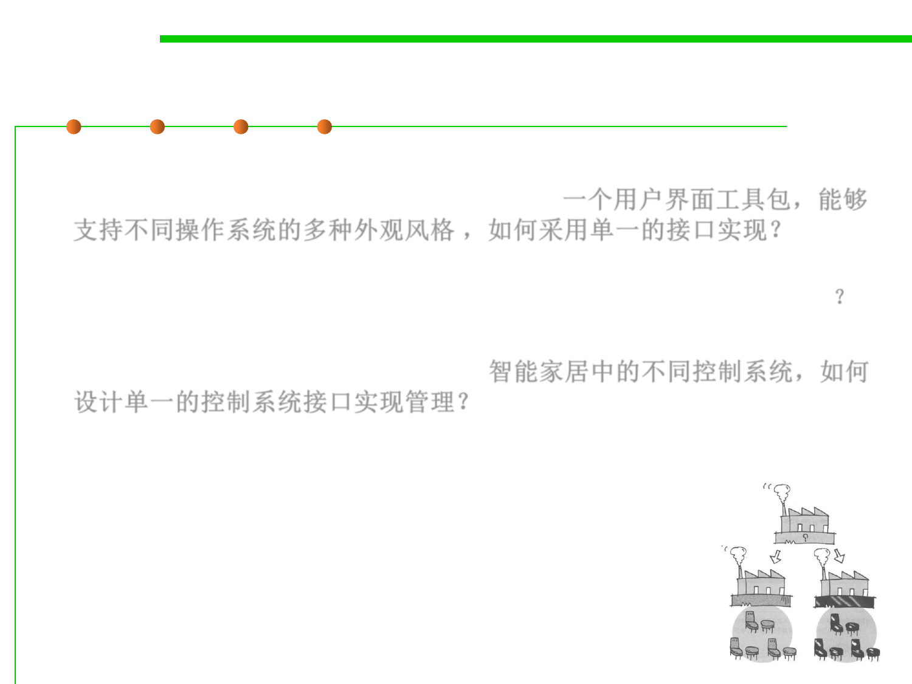

6.2 Design Patterns for Maintainability
Abstract Factory Pattern Motivation
▪ Consider a user interface toolkit that supports multiple looks and feel
standards for different operating systems: 一个用户界面工具包，能够
支持不同操作系统的多种外观风格 ，如何采用单一的接口实现？
– Example: How can you write a single user interface and make it portable
across the different look and feel standards for these window managers? ？
▪ Consider a facility management system for an intelligent house that
supports different control systems: 智能家居中的不同控制系统，如何
设计单一的控制系统接口实现管理？
– How can you write a single control system that is independent from the
manufacturer?